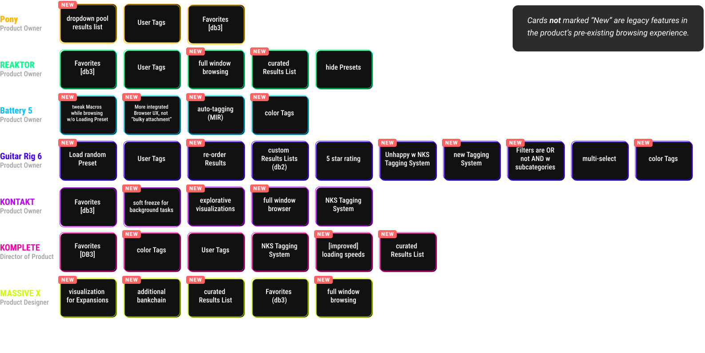

Steerings
A series of steering meetings took place with stakeholders including CEO, CTO and Director of Product. We returned to this committee three times, each time refining the story being told with the new proposed browser.
First Steering
With some notes on tech possibilities, filter query desires and further requirement details, We showcased five form factors of the universal browser concept.
.svg)
.svg)
.png)
.png)

.png)
.png)
.png)

.png)
.png)
.png)

.png)

.png)
.png)
Third Steering
Finally, we presented a more focused proposal on the immediate stakeholder needs to marry the concept closer to the short-term scope.
.png)
.svg)


Challenges
A large amount of stakeholders with conflicting requirements, a handful of legacy frameworks to adapt and replace, two databases to pull from, and dozens of filetypes to represent made building a universal browser a monolithic challenge.
Stakeholder Requirements
At the time of this project seven content teams, each with legacy and future of products, had a strong opinion in what “the perfect browsing experience” meant. I conducted an afternoon workshop with all stakeholders together and had them note and rank features most important to them. all requests, requirements and priorities had to be delicately taken into consideration, of course.
Many Frameworks
While the current Product Owners of each framework’s content team had requirements, there was also the inherent feature parity of each framework/engine. Additionally, Native-Instrument’s product line includes C++ applications built from scratch which must be considered for the new universal browser.


And Even More Filetypes
If fulfilling the needs of seven teams combined with several frameworks wasn't enough of a challenge, those frameworks represented over 20 filetypes, all needing consistent XD within the browsing experience.
Two Databases
We had to transcribe two old data models for the old tagging system to fit the new. I came up with a rubric for how this would work.
Form Factors
The couple hundred products our new browser will serve present many different form factors and dimensions. We had to create a UI experience which felt natural as users navigated through Presets.

Realizations
Before we released the universal browser as a stand alone application we were given the top-down order to sport our new design and data model on the upcoming release of Native Instrument’s top-selling guitar amp and effects software, Guitar Rig 6.
Guitar Rig 6
See the first application of the new browser for yourself!

Feedback
Color Tagging put to the test.
Color Tags User Interviews
Color tags are a UX stalwart of a feature. A seemingly simple task to implement but our users expect their tagging to be updated immediately across a few frameworks, in possibly many running instances and across two databases. Given the lurking massive effort, I must be sure I hand the developers a feature which is exactly what user’s want need.

Accessibility
Accessibility is religion at Native Instruments and the browser, historically, is where all this functionality is harbored.
Music Creation For the Visually Impaired
Native Instruments with it’s KOMPLETE KONTROL keyboard and Tim Adnitt’s direction has become a leader in accessible software and hardware in music technology across the industry. I worked closely with music instrument accessibility gurus Andre Louis and Tim Burgess to find a way to make Guitar Rig the first ever accessible guitar amp/pedal emulation for the visually impaired!
Below you can watch musician, composer and accessibility expert showcasing Native Instrument's world-renowned virtual percussion instruments using our accessibility features:
Resources
Find a PDF of the specifications as noted in JIRA, here.